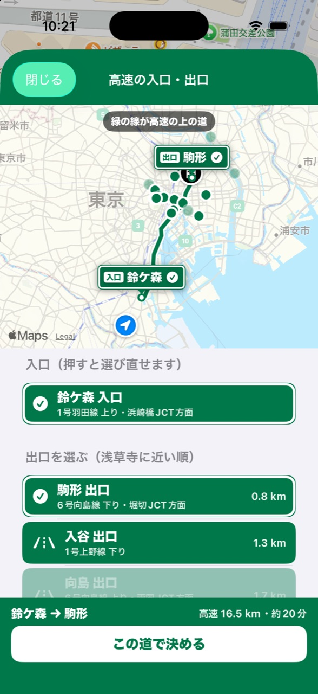
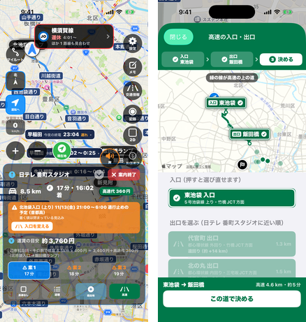
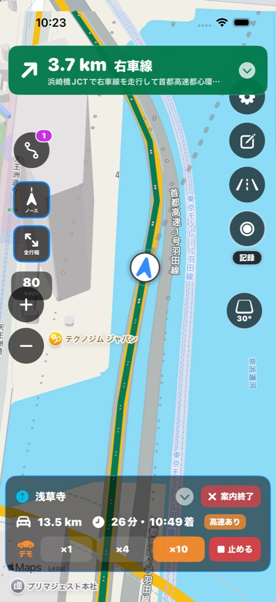
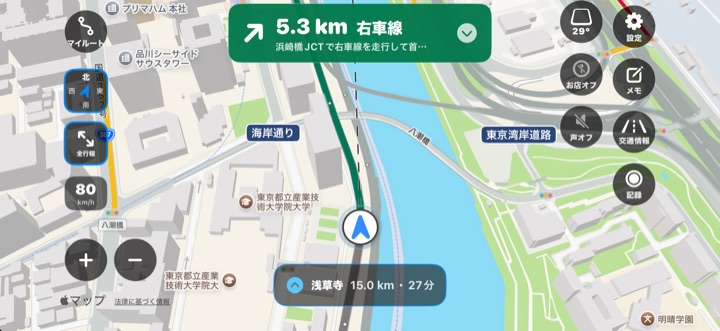

TAXI PRO NAVI でできること
TAXI PRO NAVI（タクシー・プロ・ナビ）は、タクシーの乗務員が毎日の仕事で使うためのナビです。Apple の地図の道順を土台に、お客様に言われた高速の入口・出口をそのまま選べるのがいちばんの特長です。
本アプリは、実際のタクシーを使用した営業実績に基づいて制作しています。
🛣️
高速の入口・出口を選べる全国の高速に対応。乗る入口、降りる出口を、地図の緑の札から選べます。🗣️
聞きやすい声の案内女性の声・男性の声から選べます。高速の分かれ道や車線も声でお知らせします。🚕
銀座乗禁地区のお知らせ規制の時間に近づく・入ると、画面に帯でお知らせします。音は鳴らしません。🔍
迷わない検索声でも文字でも。打つそばに「これですか？」と本物の場所が出ます。前に打った文字も、直して検索できます。マイクは押した時だけ聞きます。🏷️
通りの名前で案内地図に「環八」「駒沢通り」の札。声も番号ではなく通りの名前で。全国の都道府県に対応。✅
確認は一画面で行き先の名前・住所・実景と［リトライ］［ゴー］が、スクロールせずに一画面に。お客様と一緒に確かめられます。📱
縦でも横でもホルダーの向きに合わせて、縦・横・兼用（iPhone の向きで回る）を選べます。横は左に案内と道順、右に広い地図。🅰️
二点の道順（A→B）今いる所でない A から B までの道と時間。「蒲田駅から帝国ホテルまで、どう行く？」に、その場で答えられます。🚃
終電・電車・空港・催し・地震近くの駅の終電、止まった路線、羽田の到着便、試合や公演の終わる時刻、最近の地震と危ない時の警報を、地図の札と［情報］で。🧾
運賃の目安と高速代道順の窓に、キロ数の概算と高速代を足した運賃の目安。お客様の「いくらくらい？」に、乗る前に答えられます（サブスクリプション）。♿
車いすの乗降UD タクシー（JPN TAXI）の乗降の手順を、トヨタ公式の動画で。手順の名前を押すと、その場面から再生します。📒
マイルート走った道を記録して、すぐ名前とメモを。あとで再生、仲間に送ることもできます。▶️
デモ走行走らずに、道順と案内を机の上で確かめられます。
丸いボタンの下に、名前が付いています。停車中に開く物（設定・メモなど）は、上の方に置いています。
- 左上 — ［マイルート］、向きのボタン（北・東・南・西）、ナビ中は［全行程］、その下に速さ。
- 右上 — ［設定］、［メモ］（付け待ちで前の車のナンバーを覚えるなど）、［交通情報］（はじめは首都高の渋滞・規制の地図）、［記録］（1 秒の長押しで始める・止める）。
- 右の真ん中 — 地図の傾き（2D／3D）と［お店］、［声］。［声］を押して「声オフ」にすると、曲がり角の案内も電車の見合わせの知らせも、その場で黙ります。
- 右下 — ［情報］（電車・空港・催し・車いすの乗降）。止まっている路線があると赤い数、遅れだけなら橙の数が付きます。
- 左下 — ［＋］［−］と［現在地］。地図を大きく引いたまま［現在地］を押すと、いつもの高さに戻ります（案内中は運転の眺めへ）。下の真ん中が［検索］です。
- 道順の窓が開いている間 — ［お店］［声］は窓の上へ、［＋］［−］［現在地］は窓の上に横一列に並び、窓に隠れません。窓を小さくすると、いつもの並びに戻ります。
- 続きがある画面 — 下に下向きの矢印の印が出ます。指で上へ送ると続きが見られます。
行き先を決めて［ゴー］
1
下の［検索］を押す住所・お店の名前を打つか、🎙️ を押して声で言います。マイクは押した時だけ聞くので、車内の会話を拾いません。キーボードを出しても、下の［検索する］はすぐ押せます。言い直すときは［音声入力し直す］、やめるときは［地図に戻る］か左上の［閉じる］。
地図のお店をタップして選ぶこともできます。地図の右の［お店］ボタンで入り切りします（はじめは切）。
2
候補を選んで、確認の画面で確かめる名前と住所、Look Around の実景、［リトライ］［ゴー］が一画面に出ます。違ったら［リトライ］で選び直します。［地図で確認］で場所を地図で見ることもできます。
3
［ゴー］で案内が始まる道順の線が地図に出て、まず真上から道全体を一画面に見せてから、運転の視点へ降ります。下に道順の窓が開きます。曲がり角の手前で、声と画面の帯でお知らせします。
検索の二つの欄
文字を打つと、入力欄の下に二つの欄が出ます。
- これですか？（黄色・📍）— 打つそばから、本物の場所の候補が出ます。押すと、すぐその場所へ。遠くの駅や施設も、近所の似た名前に埋もれずに出ます。
- 前に打った文字（水色・✏️）— 検索した文字が新しい順に出ます。押すと入力欄へ戻るので、名称や地番の間違えた所だけ直してから検索できます。要らない物は行の ✕ で消せます。
道順の窓のボタン
- 高速なし 高速を使わない道順に引き直します。ETC 車載器の無い車でも安心です（よくある質問）。
- 道順 曲がる所の一覧を出します。高速の区間は緑、一般道は青の番号です。
- 経由地 途中で寄る所を検索して足します。ナビの途中でも足せます。
- 高速 乗る入口・降りる出口を選びます（次の章）。
走り出すと、道順の窓は小さくたたむ
走り出して 3 秒ほど（デモは［デモ］を押して 3 秒ほど）で、道順の窓は下の小さな札（行き先・残りの距離と時間）にたたまれ、地図と案内が広く見えます。たたんでいる間は、自車を画面の少し下に置いて、前の道を広く見せます。窓が開いている間は、自車が窓に隠れないよう、窓の上に出します。
札を押すと開き直せます。走っている間に開き直した窓は、10 秒ほどでまたたたみます。窓の中を触ると数え直し、止まっている間（信号・付け待ち）と、道順・経由地・高速の画面を開いている間はたたみません。
運賃の目安・高速代（サブスクリプション）
道順の窓の距離・時間の下に、運賃の目安を「キロ数の概算＋高速代」の合計で出します。下の小さな字に、その内わけ（キロ数・高速代・乗る入口と降りる出口）も出ます。22 時〜5 時は深夜の額です。迎車料金は含みません。
高速を使う道では、距離・時間の隣に ETC 普通車の高速代が出ます。首都高だけの道は料金表どおり、東名・中央道などへ抜ける道は「概算目安」です。入口・出口を選ばずに Apple の地図が引いた高速の道でも、道順から乗る入口と降りる出口を見つけて出します。
サブスクリプションをお使いでない時は、その場所に見本の一行（ぼかし）と［開く］が出ます。［開く］から購入の画面へ進めます。
高速の入口・出口を選ぶ
「羽田から乗って、駒形で降りて」——お客様のご希望どおりの道を、そのまま引けます。
1
道順の窓の［高速］を押す画面の上半分の地図に、入口が緑の札で立ちます。下には近い順の一覧が出ます。一覧には「上り・浜崎橋JCT方面」のように向きが付いています。
2
入口を選ぶ地図の札を押しても、一覧の行を押しても選べます。札を押すと、行き先に向かう側の向きが選ばれます。
3
出口を選ぶ行き先に近い順に、30 件まで並びます（その入口から行ける出口だけ）。出口を押すと、高速の上の道が緑の線で地図に出ます。
4
［この道で決める］入口までと出口から先は、Apple の地図の道順でつなぎます。道順の窓には、選んだ「東池袋 → 飯田橋」の一行が緑で出ます。サブスクリプションをお使いなら、選んだ入口と出口の高速代も道順の窓に出ます。選び直すと、すぐに変わります。
画面の上の段に「1 入口 → 2 出口 → 3 決める」の印があり、いまどこを選んでいるかが分かります。入口を選ぶと、地図は出口のほうへ移ります。

［高速］の選ぶ画面。蒲田から浅草寺へ、鈴ケ森から乗って駒形で降りる道。地図の緑の線が高速の上の道です。
取り返しのつかない間違いを防ぐ仕組み
- 逆向きの入口を選ぶと、必ず念押しします（「生麦方向」を選んでしまった、を防ぎます）。
- 大きな遠回りになる入口・出口は、札も行も薄く出して「遠回り（約 +34 km）」と添えます。
- 廃止・閉鎖や、工事で通行止めの決まっている出入口には、一覧に「通行止めの予定」を添えます。着く頃に閉まっている入口・出口は候補に並べません。
選びをやめるときは［選びを外す（Apple の道順に任せる）］を押します。
工事の通行止め
首都高の工事予定と、NEXCO（第三京浜・横浜横須賀道路・圏央道など）の発表から、入口・出口・ジャンクション・本線の通行止めを集めて、道順に生かします。

左：閉まる入口を通る道には、橙の帯と［入口を変える］。右：東池袋から入り直す道を選んだところ。
- 閉まる所を通る道には、橙の帯。道順の窓に「北池袋入口（上り）11/13(金) 21:00〜6:00 通行止めの予定（首都高）」のように出ます。［入口を変える］を押すと、そのまま入口・出口を選ぶ画面に進みます。
- 閉まる所を通らない案があれば、その案で行くボタンも出ます。
- ナビを始めた時に、声でも一度お知らせします。
- 高速の上の道は、通る頃に閉まるジャンクション・本線を避けて引き、避けた所を道順の窓にお知らせします。
⚠️ 通行止めは予定です。
緊急の工事や中止で変わることがあります。必ず実際の標識・交通規制に従って走ってください。
ナビ中

1号羽田線の上。道順の線も上の帯も、高速の区間は緑になります。
- 高速は緑、一般道は青。地図の線も、画面の上の帯も、高速の区間は緑の地に白い字になります。
例：浜崎橋JCTで右車線を走行して首都高速都心環状線へ
- 通り過ぎた道は灰色。これから走る道（青・高速は緑）が一目で分かります。デモでも同じです。
- 声は「およそ 300 メートル先」「まもなく」の二回。本線から側道へ寄る所も「左車線です」とお知らせします。
- ルートを外れたら、自動でリルートします。帯をタップすれば、すぐに引き直します。
- 長い直線は 3D、曲がる所は真上から。直線では風景と重ねて見せ、曲がる交差点の約 300 m 手前から少しずつ真上からの眺めに戻ります。信号や交差点名が建物に隠れません。何 m 手前からかは ⚙️設定の「自動3D（曲がり角は2D）」で 100〜500 m に変えられます。
- 傾きは右の丸ボタンで。縦のつまみで好きな角度に。「3D」「2D」の字を押せば一気に切り替わります。
- 向きのボタンに北・東・南・西。左上の向きのボタンに、方角の字が出ます。矢印は進む向きです。
- 中央分離帯の Uターンは「Uターン」と案内します。
- 目的地へのまっすぐな破線は黒白。ゴールの旗と同じ色で、青い道順とは別の線だと分かります。自車にぴったり付いて、滑らかに動きます。
- ［全行程］で道全体を一画面に。出発から行き先まで収まる大きさで見せます。［運転へ］で運転の視点に戻ります。
- 走りながら地図を眺められます。指で地図をずらしても自車へ引き戻されません。指を離して 8 秒で、自車の位置へ戻ります。
- 経由地は、ナビの途中でも足せます。道順の窓の［経由地］から検索します。
横向き（縦・横・兼用）
⚙️設定の「画面の向き」で、縦・横・兼用を選べます。兼用は iPhone の向きに合わせて回ります（はじめは兼用）。ホルダーの向きに合わせてお使いください。

横のナビ。道順の窓をたたむと、案内は上の真ん中、自車は画面の真ん中に来ます。
- 横のナビ。案内と道順の窓を左にまとめ、右を広い地図にします。窓を小さくたたむと、案内は上の真ん中に、自車は画面の真ん中に来ます。
- 横の検索。左で文字を入れ、右で［お気に入り］［履歴］［A→B］をその場で選べます。文字を打つと、右に候補が出ます。
- 横の確認画面。行き先の Look Around（周りの風景）を右に大きく出します。
- 横の高速の入口・出口を選ぶ画面。左に一覧、右に広い地図を置きます。
- 横の［交通情報］。首都高の地図の全体が一度に見え、指で大きく寄せられます。
二点の道順（A→B）
乗り場や電話で「蒲田駅から帝国ホテルまで、どう行く？ どのくらいかかる？」と聞かれた時に。今いる所からではなく、A から B までの道と、距離・かかる時間を見られます。
1
［検索］の画面の［A→B］を押す二点の道順の一覧が開きます。［新しく調べる（A を選ぶ）］を押します。
2
出発地 A を選ぶいつもの検索と同じように探し、確認の画面の［出発地（A）にする］を押します。行き先の確認の画面の左上にある［A ここから］でも、その場所を A にできます。
3
行き先 B を選んで［A→B を見る］A から B の道が地図に出て、道順の窓に A・B と、距離・約何分が出ます。A・B を選んでいる間は、上に札が出ます。［やめる］で取りやめます。
- 見るだけの道順です。自車は A にいないので、案内の声・帯・リルートはありません。［閉じる］で、いつもの地図に戻ります。
- デモ A から車が走り出し、声も帯も本物と同じに確かめられます。⚙️設定の「デモ走行」が切でも出ます。止める・着くと、A→B の眺めに戻ります。
- 登録 よく聞かれる二点を、30 件まで貯められます。一覧で押すと、もう一度 A→B を見られます。
- 一覧の［逆向き］で B→A（帰りの道）を見られます。［ナビ（現在地→A→B）］は、今いる所から A に寄って B へ向かう本当のナビです。お迎えに行って、そのままお乗せして走る時に。
- サブスクリプションをお使いなら、運賃の目安と高速代も道順の窓に出ます。
通りの名前
Apple の地図では「都道416号」と出る道も、乗務員やお客様は「駒沢通り」と呼びます。TAXI PRO NAVI は、地図に「環八」「駒沢通り」「甲州街道」のような通りの名前の札を出し、案内の声も通りの名前で道を言います（例：「第二京浜（国道1号）」）。
- 東京・神奈川・埼玉・千葉は、アプリに入っています。
- ほかの道府県は、初めて入った時に一度だけ、その県のデータを入れるかをお聞きします。大阪なら「国道25号」ではなく「御堂筋」になります。
- あとから入れるときは、⚙️設定の「通りの名前」→［地域を選ぶ］から。
- 地図の札をすっきりさせたいときは、⚙️設定の「通りの名前」で切れます。寄った眺めでは、同じ名前の札は一画面に一つほどにしています。
案内の声（女性｜男性）
⚙️設定 →「ナビの音声案内」で、女性の声・男性の声を選べます。［聞く］で試しに鳴らせます。声は VOICEVOX Nemo を使っています。先の曲がり角の声は、道順ができた時から前もって作っておきます。
道路や地名は、乗務の言い方で読みます（環七＝かんなな・環八＝かんぱち・東急東横線＝とうきゅうとうよこせん・四の橋＝しのはし、「〜橋（ばし）」「〜坂下（した）」など）。読み違いに気づいたら教えてください。次の版で直します。
案内の声は、途中で別の声に替わりません。声が間に合わなかった曲がり角は、遅れて言っても意味が無いので黙ります（画面の帯は出ています）。
同じ画面に、声の切り替えが二つあります。
- 予備の声（iPhone の声）（はじめは切）— 入れると、声の仕組みが動かない時と、デモの ×4・×10 の間だけ、iPhone の声（選んだ声と同じ男女）が読みます。切のままなら、その間は黙り、画面の案内だけになります。
- 話し始めたら最後まで（はじめは入）— 角を過ぎても、［案内終了］で終えても、話している文は最後まで言い、次の案内は後に続けます。切にすると、過ぎた角の案内は途中でやめて次へ移ります。
予備の声を使うなら、iPhone に「Kyoko（拡張）」を入れておくと自然になります。入れ方：iPhone の設定 → アクセシビリティ → 読み上げコンテンツ → 声 → 日本語 → Kyoko → 拡張
銀座乗禁地区・空車通行止め
お客様を降ろして初めて「ここは乗禁地区だった」と気づく——それを防ぐためのお知らせです。
- 地図に薄い縞で出します。線は東京タクシーセンターの公式ポスター（2026年1月30日版）に合わせています。
- 規制の時間（土日祝を除く 22時〜翌1時）に近づく・入ると、検索欄の下に帯でお知らせします。音は鳴らしません。
- ナビ中は控えめに。実車で向かう時は、帯も縞も薄くして道順の邪魔をしません。
- 空車タクシー通行止め（群青・水色の囲い）。ナビで着いたら 15 分は空車として扱い、囲いの中にいたら画面の一番下に帯を出します。
- 地図に出すかどうかは、⚙️設定の「乗禁地区を地図に出す」で切り替えられます。
お知らせは目安です。実際の標識と交通規制に必ず従ってください。
［情報］— 電車・終電・空港・催し・天気と地震・車いす
地図の右下の［情報］に、「電車」「空港」「スポーツ・コンサート・イベント」「天気・地震」「車いすの乗降」をまとめています。今いちばん大事な物から順に並ぶので、上から読むだけで次にどこへ向かうか決められます。いくつかは、地図の上にも札で出ます。
- 終電の札。夜 9 時から翌 2 時まで、近くの駅に「新橋 今夜の終電 22:40〜0:50 ▾」のような一行の小さな札を出します。押すと方面ごとの終電と「あと何分」が開きます。あと 10 分を切った駅・止まっている路線のある駅だけ、大きな札でお知らせします。
- 札は自車を隠しません。ターミナル駅の大きな札が自車に重なる時は、札を横にずらす → 一行にたたむ → 薄くする、の順で、自車の位置を見失わないようにします。ナビ中は、進む先も空けます。
- 近くの駅の終電の一覧。［情報］→［電車］では、駅ごとに距離と、その駅の一番遅い終電（「最終」）の時刻も出ます。
- 昼の下見にも。昼の休憩中でも、地図を指で動かして見ている間は、見ている所の駅に「今夜の終電」を出します（渋谷・新宿・品川などのターミナル駅も）。［現在地］を押すと消えます。札は⚙️設定で切れます。
- 電車の運行情報。地下鉄（東京メトロ・都営）と JR東日本・京急・東急・京王・西武・東武の首都圏の路線。運転見合わせがある時だけ地図の上に赤い帯を出し、新しく止まった時は一度だけ声で知らせます。終電の札にも「見合わせ」「遅れ」の印が付きます。情報が届かなくなった鉄道会社は、「○○の運行情報は 14:10 から届いていません」のようにお知らせします。
- 羽田空港。国際線の到着（遅れの見込み・欠航も）、夜は「今夜の国際線」として朝 5 時までの便と最終便。最終便が 30 分以上遅れたら一度だけ声で知らせます。待機所と乗り場のカメラ（東京タクシーセンターのページ）も同じ画面から開けます。羽田の近くで行き先を決めると、確認画面に羽田からの定額運賃も出ます。
- 催しの終わりの札。東京ドーム・日本武道館・国立競技場などの会場に、試合や公演の終わる時刻（公式の予定か見込み）を出します。終演の 1 時間前から、人が出てくる間まで。会場は東京の営業区域（23 区・武蔵野市・三鷹市）の中です。札が自車に重なる時は、終電の札と同じく、横にずらす・一行にたたむ・薄くします。会場の近くで待っている時は、札を自車の上に出して、終演の時刻が隠れないようにします。
- 天気・地震。気象庁の発表から、最近の地震（震度・震源・1都3県の揺れ）を見られます。震度 5 弱以上の地震・特別警報・今いる市区町村の警報は、カードの一番上に赤で出します。
- 車いすの乗降。UD タクシー（JPN TAXI）に車いすのお客様をお乗せする手順を、トヨタ公式の動画とホームページで見返せます。「スロープの格納」「車いすの固定」など手順の名前を押すと、その場面から再生します。2019年3月以降の車と、2019年2月までの車の両方があります。お客様の前で見返すのにも、前もって練習するのにも。
サブスクリプションで使えるもの
- 乗り場の波・明日の朝 — ［情報］→［空港］の、国際線の下。羽田の 1号〜4号・国際（第5乗り場）に、これから 60 分のお客様の流れと、乗り場ごとの 90 分の波、次に着く便を出します。明日の朝 8 時までに着く便もまとめて見られます。
- 雨雲・警報の表・天気 — ［情報］→［天気・地震］。雨雲を地図に重ねて、いまから 1 時間先まで（15 分ごと）見られます。1都3県の警報・注意報の表（今いる市区町村が一番上）と、今日・明日の天気もあります。
- 運賃の目安・高速代 — 道順の窓に（行き先と［ゴー］）。
- 運賃の地図 — ［情報］の一覧の、車いすの乗降のすぐ上。自車から、運賃の目安ごとの輪を蜘蛛の巣のように地図に描きます。道のりは本当の道で測るので、海や川の向こうは回り込んだ形になります。
［情報］→［空港］の［開く］（道順の窓の運賃の欄の［開く］からも）から、月ごとの自動更新のサブスクリプションで使えます。機種を変えた時などは、購入の画面の「購入を復元」から。解約は iPhone の設定 → Apple アカウント → サブスクリプション から行えます。
終電・運行・到着の時刻は目安です。駅や空港の案内を優先してください。
マイルート（記録・再生・送る）
1
右上の［記録］を 1 秒長押しして走る通った道が紫の線で残ります。ポケットに入れたままでも記録します。止める時も 1 秒の長押しです（うっかり触れても始まらない・止まらないように）。
2
止めると「マイルートに保存しました」の札地名が自動で付いて、マイルートに入ります。札の［名前とメモを付ける］で、その場で名前とメモを。［再生］ですぐ見返せます。急ぐときは［あとで］で、すぐナビに戻れます。
3
左上のマイルートから呼び出して ▶ 再生「一度お送りしたお客様の道」を、次に呼ばれた時に見返せます。再生は ×1／×4／×10。地図と車が止まらずに流れるので、目で追いやすくなっています。
- 仲間に送る：マイルートの道は、リンクやファイルで送れます。受け取った道は、そのままマイルートに入ります。
- 点にメモ：道の点を押すと「一方通行注意」「朝は混む」などのメモを残せます。
- 走行の足あと：記録を押していなくても、通った道に小さな白い点が残ります（200 m ごと・約 500 km 分）。アプリを閉じていた間やトンネルなど、GPS が途切れた所は線でつなぎません。⚙️設定の「走行の足あと」で止めたり消したりできます。
デモ走行
⚙️設定で「デモ走行」をオンにすると、道順の窓に［デモ］が出ます。押すと、道順の線の上を車が自分で走ります。案内の声・高速の緑・乗禁地区のお知らせを、走らずに確かめられます（一般道 時速 40 km・高速 時速 80 km を ×1／×4／×10 で早回し）。
経由地を入れた道順も、経由地を通って最後まで走ります。目的地に着くと「デモ走行を終了します」と言い、本当の現在地から同じ行き先への道順を引き直します。
デモの間は本物の GPS を使わず、マイルートや足あとにも残しません。お客様をお乗せする前に、初めての高速の道を下見するのにも使えます。
注意点 — 安全がいちばん
🚗 運転中に画面を操作しないでください。
操作は必ず停車中に。案内の声と記録は、画面を見なくても働き続けます。
🛣️ 高速の地図データについて。
高速の入口・出口と高速の上の道は、OpenStreetMap のデータからアプリが作っています。新しい版を出すたびに作り直しますが、新しい出入口がすぐには反映されないことがあります。工事の通行止めも予定を集めた物で、緊急の工事や中止は入りません。実際の標識を優先してください。
📡 GPS は万能ではありません。
高いビルの谷間・トンネル・高架の下では、位置や向きが一時的にずれることがあります。
🔋 充電しながらのご利用をおすすめします。
GPS を使い続けるため、電池の減りが早くなります。
よくある質問
会員登録は要りますか？記録した道はどこに保存されますか？
会員登録は要りません。マイルートと足あとは、お使いの iPhone の中に保存されます。
ETC 車載器の無い車で使いたい
道順は、ETC がある前提で高速も使って引きます（入口によっては、サポートレーンや ETC 以外の払い方が残っているためです）。首都高は ETC 専用の入口が増えていて、スマート IC も ETC 専用です。
ETC が無い時は、道順の窓の 高速なし を押してください。高速を使わない道順に引き直します。もう一度押すと元に戻ります。道順の窓の高速代は、ETC 普通車の額です。
知っている入口・出口が一覧に出てきません
地図データに名前が入っていない出入口や、地図データの抜けがあります。気づいた所を教えていただければ、次の版で直します。
案内の声が、時々ちがう声になる／黙る時がある
声が間に合わなかった曲がり角は、遅れて言わずに黙ります（画面の帯は出ています）。ちがう声（iPhone の声）になるのは、⚙️設定の「予備の声（iPhone の声）」を入れている時の、声の仕組みが動かない時とデモの ×4・×10 の間だけです（案内の声）。
地図のお店を押しても、行き先になりません
地図の右の［お店］ボタンが切になっています（はじめは切）。押して入にすると、お店をタップして行き先にできます。⚙️設定の「お店をタップで選ぶ」でも切り替えられます。
記録中にアプリが落ちたら、道は消えますか？
いいえ。記録中はこまめに途中まで控えています。次に開いた時に「そこまでの道」を救い出して保存します。
地図が 3D のまま／2D のままになってしまった
ナビ中は、直線で 3D・曲がる所の手前で 2D に自動で切り替わります。いつも同じ傾きにしたいときは、⚙️設定の「自動3D（曲がり角は2D）」を切ってください。傾きは右の丸ボタンのつまみで好きな角度に、「3D」「2D」の字で一気に変えられます。
終電の札が多すぎる／いらない
ふだんは一行の小さな札です。⚙️設定で終電の札を切ることもできます。昼の札は、［現在地］を押すと消えます。
サブスクリプションを解約したい／機種を変えた
解約は iPhone の設定 → Apple アカウント → サブスクリプション から。アプリを消しても、サブスクリプションは止まりません。新しい iPhone では、［情報］→［空港］→ 乗り場の波の［開く］→「購入を復元」で戻ります。